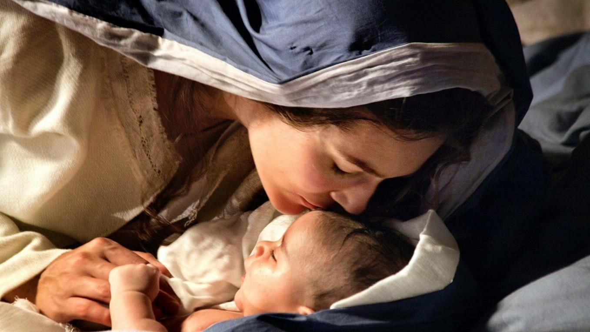
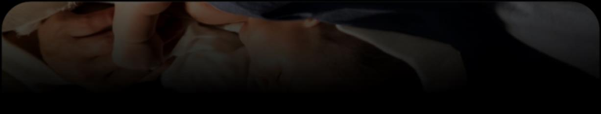
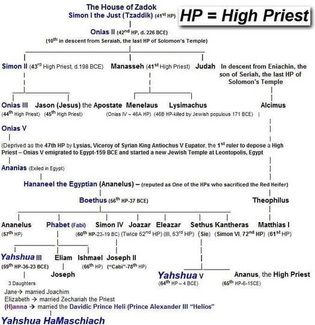
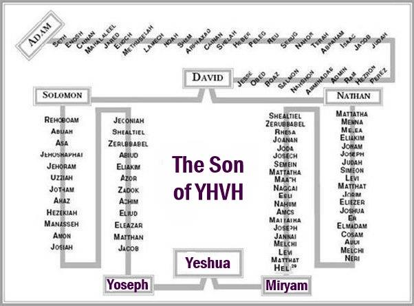

Contents


If we examine the beginnings of Yahushua with a critical mindset, rather than relying on the Christian faith, we will perceive the virgin birth as unbelievable. This is due to it not aligning with the criteria of divine communication that were set when יהוה granted His Torah to the Yisra'el nation on Mount Sinai. Sinai, an area in Mitsrayim/Egypt, encapsulates rich historical and cultural significance.
During that period, the nation of Yisra’el had a population exceeding 3 million individuals who witnessed the thunder, and the smoking mountain, and heard יהוה's voice uttering the initial two commandments.
Interestingly, the narrative of Miryam is only mentioned in two of the gospels, rather than all four as one might expect. These gospels recount an event where an angel communicates with Miryam, yet there are no individuals present to confirm this occurrence. According to the Torah, a marriage requires the presence of two witnesses. Therefore, it is difficult for a devout believer to believe that יהוה would allow an event to occur without any other witnesses, especially considering that the woman involved in the pregnancy is not the most reliable witness, as she may have motives to make false claims (such as avoiding the stigma of being unmarried and pregnant).
Mattithyahu/Matthew 1816“But if he does not hear, take with you one or two more, that ‘by the mouth of two or three witnesses every word might be established.
Certainly, the Author of the Torah/Law would carefully contemplate the implications for the Messiah when orchestrating events of such significance.
Please remember that Mohammed received the Koran from an angel, and Yoseph received the messages from an angel that later became sacred to Mormons.
The key idea is that according to Halacha, a person's belief cannot be solely based on receiving something or being informed privately by an angel, and it is clear that יהוה is well aware of this.
How do you even know if Yahushua is the True Messiah?
Let's examine the Scriptures from a Hebrew perspective.
Yochanan Aleph/1John 58the Spirit, and the water, and the blood. And the three are in agreement.
What do water, blood, and spirit mean?
What is the distinctive testimony from יהוה that sets Yahushua apart as His Son? This testimony states that Yahushua the Messiah was born as a human, descended from a royal and priestly bloodline, and conceived through the Spirit of Set-Apartness.
Born, Bloodine, Begotten = water, blood, spirit!
I am aware that the majority of individuals associate the word "water" with the concept of baptism. We hold the belief that Yahushua was a human, rather than focusing solely on the act of mikvah/baptism. The Apostle Sha'ul provides a clever explanation of the evidence given to us by יהוה, which confirms that Yahushua is the Messiah.
Romiyim/Romans 11Sha’ul, a servant of יהושע Messiah, a called emissary, separated to the Good News of Elohim, (to proclaim the Kingdom of יהוה through Yahushua the Messiah) 2 which He promised before through His prophets in the Set-apart Scriptures, (the Torah and Prophets) 3 concerning His Son, (Messiah Yahushua our King) who came of the seed of Dawiḏ according to the flesh, (human through water in the womb of a woman), 4and begotten (declared) 4 who was designated Son of Elohim with power, according to the Set-apart Spirit, by the resurrection from the dead: יהושע Messiah, the Master of us, 5through whom we have received favour and office of the emissary for belief-obedience among all the nations on behalf of His Name, 6among whom you also are the called ones of יהושע Messiah.
Sha’ul is saying that Yahushua's declaration of being the Messiah is primarily based on the prophetic passages found in the Scriptures, which predicted the arrival of a human saviour. They predicted the arrival of a "Royal Priest" known as Melchizedek, who would be a human Messiah.
Sha'ul proceeds to provide evidence showing that Yahushua is the prophesied Messiah Melchizedek by emphasizing his physical birth. Water, originating from the ancestral lineage of David's descendants through his seed, i. e " born into the bloodline of the seed of David. Born from the resurrection, a result of bloodline. " The essence of something beyond the physical realm.
Water
Yahushua was born according to prophecy through the natural process of a woman's womb, fulfilling the unique sign designated for highly anointed individuals involved in The Plan of Salvation. This extraordinary birth can be considered a miracle. Every person is born from their mother's womb, which is symbolized by water. However, Yahushua had to fulfil the prophecy of being born to a “virgin” as predicted by יהוה's Prophets. The evidence that supports Yahushua being a human Messiah and a greatly blessed individual is the fact that he was born miraculously and his connection to water.
Blood
Yahushua, through his lineage from Yoseph, was both a blood relative and rightful successor to the Throne of David. Yahushua, through Miryam's maternal lineage, was the rightful successor to the position of High Priest as the great grandson of Yahushua III, who oversaw the reconstruction of the Second Temple. Yahushua's bloodline satisfied the conditions for him to fulfill the role of the Messiah, who was destined to bring back the priesthood and the throne of David.
Spirit
Yahushua was born as the son of יהוה, not through a human birth, but through the Ruach Ha Qodesh, The Spirit of Set-Apartness and his resurrection, being the first-born Son of יהוה.
The significance of this lies in the fact that many individuals fail to comprehend that this serves as evidence of Yahushua being the Messiah. The majority of individuals lack knowledge and understanding regarding the true identity and significance of the Messiah. They have faith in his divine nature as the Messiah based on the miracles he manifested, regarding them as evidence of his deity. These signs were provided for a corrupt and unfaithful generation who demanded a "sign". Smart witnesses who can confirm that he was the Messiah and the son of יהוה are absent.
Water – the witness of the Virgin Birth
The belief in The Virgin Birth, a Christian doctrine, is considered to be one of the most damaging false doctrines. This ultimately resulted in the development of the mistaken belief in the Incarnation and, in order to prevent Yahushua from being born with Original Sin (which is also incorrect), it became necessary to invent another misconception known as the Immaculate Conception. As a result of these events, Miryam became revered as Co-Redemptrix, and the pagan Christian Church returned to its original practice of worshiping The
Queen of Heaven. The goddess Ishtar, also referred to as Easter, is renowned as the queen of Babylon.
We aim to provide a clear and accurate explanation of the extraordinary birth of Yahushua and the significance of the term "virgin," while also highlighting the divine endorsement of Yahushua through reliable doctrinal truths rather than mere human customs. The entire belief in the Incarnation originated from a sound bite that was completely separated from its original Scriptural context. The phrase being referred to is:
Mattithyahu/Matthew 118But the birth of יהושע Messiah was as follows: After His mother Miryam was engaged to Yosěph, before they came together, she was found to be pregnant from the Set-apart Spirit.
Luqas/Luke 127To a maiden engaged to a man whose name was Yosěph, of the house of Dawiḏ. And the maiden’s name was Miryam.
To clarify, the term "The Set-Apart Ghost" does not refer to a ghost or any form of entity. The Set-Apart Spirit, the Breath of יהוה, the divine essence bestowed upon every individual by יהוה, guides and instructs us to follow and uphold His Torah/Law. Therefore, the implication of this statement is:
Mattithyahu/Matthew 118Now the birth of Yahushua the Messiah was on this wise: When as his mother Miryam was espoused to Yoseph, before they came together, she was found with child of The Spirit of Set-Apartness (Yahushua was born with the Spirit to keep the Torah/Law of יהוה that would make Yahushua SET-APART before יהוה).
The truth is that every conception is given life by the sacred spirit or the divine breath. Miryam was not impregnated by a supernatural being known as the "Ghost". The doctrine of the Incarnation forms the foundation of the Christian Church, stating that the Holy Spirit conceived Miryam and Jesus was considered a divine being. Why is it that the Virgin Birth, as it is presented, serves as evidence of the Incarnation, yet it is only briefly mentioned in two of the Gospels and not mentioned by Yahushua or any other writer in the Brit Chadashah/New Testament. This fact raises doubts and prompts us to inquire further about this particular doctrine. Yahushua and others simply didn't view it as significant.
The Scriptures rarely discuss The Virgin Birth because the teachings surrounding it are considered flawed, asserting that Yahushua was not an embodiment of יהוה. Once again, we are faced with contemporary translations that have incorporated pagan connotations into Greek language, in an attempt to portray Yahushua as a semi-divine being appealing to Greek pagans. This mentioned individual is commonly known as Hesus Horus Krishna, who is considered a demi-god by some, having qualities associated with pagan beliefs. Jesus H, often referred to as Jesus H. Christ, is a figure of great importance in Christianity. The term "Christ" has undergone significant changes in its meaning over a period of 1500 years.
The incorrect translation of the word as "virgin" is based on the use of the Greek term Parthenos instead of the Hebrew term almah. In the Greek language, the term "Parthenos" denotes the concept of being a "sexual virgin. " Nevertheless, we are addressing the occurrence of the prophetic indication regarding the Messiah, as expressed by Yeshayahu/Isaiah, which pertains to a celestial symbol known as 'the son of man' in HEBREW, rather than Greek. The prophecy delivered by Yeshayahu/Isaiah in Hebrew stated that Yahushua must fulfil the requirement that the Messiah will be born of a young woman. The term "virgin" in Hebrew does not specifically imply "sexual virginity," which was wrongly translated into Greek. The translators of our contemporary Bibles who were influenced by Hellenistic culture held a belief in the Babylonian Trinity, which involves the belief that Semiramis was impregnated by the sun god Ba’al's divine rays. This belief continues to be held by some translators even today. In order to promote pagan beliefs, the translators chose to interpret the Hebrew word, as stated by Yeshayahu/Isaiah, to mean "sexual virgin" in Greek. The prediction that Yahushua must demonstrate his association with "water" and the indication of being born from "a virgin" is communicated by יהוה through the prophet Yeshayahu/Isaiah:
Yeshayahu/Isaiah 7:14"Therefore יהוה Himself will give you a sign (VIRGO): Behold (VIRGO), a young maiden of marrying age (almah) will be with child and bear a son, and she will call His name Immanuel"
Actually, Yeshayahu/Isaiah was referring to a celestial indication known as the "sign in the sky of the son of man," which would serve as a sign of the forthcoming birth of a royal ruler. This is the specific "sign" that the Babylonian Astronomers, who were mentored by the prophet Daniel (magi), were seeking and tracked to the location (Bethlehem) where it had been predicted that the King would come into the world. This is the identical "symbol" that reappears in the sky during the second coming.
Chazon/Revelation 121And a great sign was seen in the heaven: a woman (constellation Virgo or Virgin) clad with the sun, with the moon under her feet, and on her head a crown of twelve stars. 2And being pregnant, she cried out in labour and in pain to give birth. (to a King, the planet Jupiter)
This represented both a prophecy and a sign that had two aspects. The celestial realm carries the manifestation of יהוה's redemptive scheme, depicted in the constellations. This divine plan also reverberates on the terrestrial plane. According to Yeshayhau/Isaiah 7:14, it is mentioned that a young woman will give birth to a son. The challenge lies in addressing the Hebrew term that was inaccurately interpreted as "virgin" in Greek, thereby insinuating a sexual connotation.
This word is:
Strong's H5959. almah almah: a young woman, a virgin
Original Word: עַלְמָה
Short Definition: maidens
This term can refer to someone who is sexually inexperienced, particularly young women who are not yet married. However, the main definition of this word is:
- young woman • 1a) of marriageable age • 1b) maid or newly married.
Thus, the term "almah" does not imply virginity in a sexual sense, rather its main connotation refers to a young woman of a suitable age for marriage. The term is used in other parts of the Tanach/Old Testament but is never translated to denote a sexual meaning, as it is in Bereshit/Genesis 24:43 (”maiden“); Shemoth/Exodus 2:8 (”girl“); Tehillim/Psalm 68:25 (”maidens“); Mishle/Proverbs 30:19 (”maiden“); Shir ha Shirim/Song of Songs 1:3 (”maidens“)
This is the key. In the Hebrew language, the term used to describe a person who has not engaged in sexual activity is "bethulah. " If Yeshayahu/Isaiah 7:14 intended to convey the idea of virgin instead of young maiden, then יהוה, through Yeshayahu/Isaiah, would have utilized the term bethulah to accurately indicate the birth of the Messiah. יהוהis not deceitful. I am not suggesting that Miryam was not a virgin, rather, I am suggesting that her virginity may not have been a requirement. It would have been sufficient for her to be a young unmarried woman of appropriate age to fulfill the prophetic "sign" mentioned by Yeshayahu/Isaiah. What I mean to say is that Yoseph and Miryam had every right to engage in sexual activity.
Could Miryam and Yoseph have conceived Yahushua through normal sexual relations?
There are two approaches to comprehending the scriptures about the virgin birth: the conventional interpretation and an alternative perspective. The Greek customs of people can be deceiving, while the Hebrew way of thinking found in Scripture is more reliable. We are familiar with the Greek concept that Miryam, who was a virgin, and Yoseph did not engage in a sexual relationship, and yet he considered divorcing her and sending her to her cousin Elisabet. None of it is factual, with no single word being spoken; rather, it is inferred belief.
Below is the true translation using the Hebraic mindset:
Mattithyahu/Matthew 118This is how the birth of יהושע the Messiah came about: His mother Miryam was engaged to be married to Yoseph (the subject of this is marriage not sex), but before they came together (speaking of marriage in context not sex), she was found to be pregnant through the will of יהוה. 19Because Yoseph her husband was faithful to the Torah/Law (which declares those who are engaged to be husband and wife), and yet (although they were married in the eyes of יהוה according to יהוה’s
Torah/Law and had not sinned in having sex during the engagement) did not want to expose her to public disgrace (because the commandments of men forbid sex before the ceremony to prove virginity), he had in mind to send her away quietly (In order to prevent an avoidable scandal, it is preferable to refrain from ending the marriage. Yoseph strategically ensured the safety of Miryam and the infant by sending them to The Temple, away from Herod's grasp).
You see, in the Torah/Law of יהוה two people who are engaged are considered by יהוה husband and wife:
Devarim/Deuteronomy 2223“When a girl who is a maiden is engaged to a husband, and a man finds her in the city and lies with her, 24then you shall bring them both out to the gate of that city, and shall stone them to death with stones, the girl because she did not cry out in the city, and the man because he has humbled his neighbour’s wife. Thus, you shall purge the evil from your midst.
Engaged couples can engage in sexual activities without violating any commandments in the Torah/Law. Therefore, the sacred bond of marriage, in which a man and a woman commit to each other, is established before יהוה (the divine) when the man proposes to the woman and she accepts in the presence of יהוה. The wedding ceremony is a social custom designed to commemorate the pre-existing agreement between two individuals. This is why engaging in sexual activity with a woman who is already promised to another person is considered adultery, but the Torah or divine law does not explicitly prohibit sexual relations between couples who are engaged.
Yoseph, who upheld the Torah/Law of יהוה (wondering why the author mentioned that), understood that it was legally permissible, according to יהוה's laws, for him and Miryam to engage in sexual relations and conceive Yahushua before they were officially married, going against societal norms. However, it would have been extremely challenging to communicate this to the Hebrews of that era who adhered to the customs outlined in the Talmud. Miryam would have risked facing severe public humiliation.
Therefore, it is plausible that Yahushua may have been conceived through the physical act of sexual intercourse between Yoseph and Miryam, making him "the son of man". In over 87 instances, Yahushua clearly declared himself as the son of man. It is crucial to comprehend the Torah/Law since, in accordance with its principles, Yahushua was not illegitimately born, contradicting the Christian belief that he was born out of wedlock. Yoseph and Miryam were considered a married couple in the sight of יהוה.
There is a strong possibility that Miryam was a virgin in the context of her sexuality. However, this does not suggest in any manner that יהוה engaged in a sexual act with Miryam and instilled a "Spiritual Seed" into Yahushua, thus creating a semi-divine being as Christianity suggests.
The fact that Yahushua died should put an end to that false doctrine. The inheritance of death is passed down through the paternal lineage, and Yahushua experienced death. Conclusion Yahushua came into existence through the lineage of Yoseph, and as a result, the element of mortality became a part of him.
Could Miryam have been a sexual virgin?
Miryam could potentially have maintained her sexual virginity. In reality, I am convinced that she truly was. If she indeed was, then it is likely that יהוה utilized Yoseph's seed to accomplish the miracle, and Yahushua remained entirely human in all aspects (Ib'rim/Hebrews 2:17 NIV), as he was "born human according to the flesh" (Romiyim/Romans 1:3). He was precisely as the Scriptures stated.
In fact, the phrases “image of God” and “son of God” are both phrases used to say “he was human” not a God:
Bereshit/Genesis 127And Elohim created the man in His image, in the image of Elohim He created him – male and female He created them.
Luqas/Luke 3
38the son of Enosh, the son of Seth, the son of Adam, (Adam being) the son of Elohim.
Tehillim/Psalm 826 "I said, 'You are "gods"; you are all sons of the Most High.'
The same expressions can be found consistently in the entire Scriptures. The meaning of the terms did not acquire any mystical implications when referring to Yahushua. Yahushua represents the ultimate example of a human being – the flawless embodiment, “perfect image” or "ideal representation" of The Almighty.
Ib’rim/Hebrews 5 NKJV8 though He was a Son, yet He learned obedience (to יהוה) by the things which He suffered. 9And having been perfected, He became the author of eternal salvation to all who obey Him (יהוה)
Numerous individuals highlighted in the Scriptures, who played significant roles in the Plan of Salvation, were born with extraordinary divine blessings as a remarkable indication of יהוה's presence. Through Scripture, we see יהוה works in constant PATTERNS.
- Each one’s birth is announced by an Angel. • All of these men were born in a remarkable manner without involving sexual intercourse, but יהוה utilized their father's genetic material [seed] in the process of conception.
The Miraculous Birth of Adam
Certainly, Adam lacked any biological parents and is explicitly referred to as the offspring of יהוה in the most literal sense. Adam did not have any parents, whether male or female, but it was only through the Breath of יהוה that Adam came into existence. Nevertheless, we do not regard Adam as a deity or on the same level as יהוה, and we do not believe in polytheism. What makes Adam human when he was essentially created from the Breath of יהוה?
The Miraculous Birth of Yitschaq/Isaac
Yitschaq/Isaac, who was born miraculously to Avraham and Sarah, was the chosen one. Avraham and Sarah, who were unable to have a child, decided to seek the help of their slave woman Hagar in order to conceive. They believed that their son Yishma’el was the solution to their desire for a child. They not only stopped making an effort, but Sarah's reproductive ability was no longer functional, and she initially doubted the fulfilment of the prophecy regarding Ishmael. However, Yitschaq/Isaac's inclusion in the GODHEAD was not a result of that miracle. We do not view Yitschaq/Isaac as being on the same level as יהוה or as part of a polytheistic god. In the story of Yitschaq/Isaac's Miraculous Birth in Bereshit/Genesis, we understand that Sarah was unable to have children and miraculously conceived Yitschaq/Isaac through the intervention of יהוה's angel. This particular child was also "delivered" by a divine being from יהוה and conceived by "The Spirit of Set-Apartness" which signifies being sacred and distinguished. What sets this apart from Miryam/Yoseph? Nothing at all. Why is Avraham recognized as the biological father of Yitschaq/Isaac, despite it being יהוה who granted her the child? This can be attributed to the fact that יהוה utilized Avraham's biological seed in the miraculous conception.
The Miraculous Birth of Sampson
Sampson, a unique individual, was destined for greatness from the moment of his birth. He was devoted to serving יהוה and upheld justice as a righteous judge. His arrival into the world was extraordinary, being born to Manoah and his wife who were both his biological parents. However, this did not mean Sampson became a member of a divine being. We strongly deny the belief that Sampson is regarded as a deity alongside יהוה. According to Shophtim/Judges 13:2-5, Manoah's wife was infertile and the purpose of sexual intercourse during that period was solely to produce an heir. Therefore, it is highly improbable that Manoah engaged in frequent sexual activity with his infertile wife. The divine figure of יהוה, known as the Angel, also came to her and bestowed upon her a son named Sampson, who was dedicated to serving יהוה as a Nazarite. What sets this apart from Miryam/Yoseph? Absolutely nothing Why is Manoah acknowledged as Sampson's biological father despite יהוה being the one who granted his wife the child? This is because יהוה utilized Manoah's seed to manifest the miracle.
The Miraculous Birth of Yochanan/John the Baptist
In Luqas's Gospel, we are told the extraordinary story of the birth of Yochanan/John the Baptist. It revolves around an elderly priest named Zekaryah/Zechariah and his wife Elisabet, who had been unable to conceive.
During Zekaryah/Zechariah's duties as a priest in the temple, the angel Gabriel visited him and foretold the upcoming birth of his son, emphasizing that Zekaryah was not engaging in intimate relations with his wife at the time. Due to Zekaryah's disbelief in the angel's message, he was rendered speechless until the day of his child's birth. However, after being filled with the Ruach Ha Qodesh, he confidently sang his prophetic hymn (Luqas 1:68-79). However, This did not mean that Yochanan/John the Baptist became a part of the divine Trinity. We do not view Yochanan/John as being on the same level as יהוה or as part of a polytheistic deity. The reason Zekaryah is considered to be Yochanan/John's biological father is because יהוה used Zekaryah's seed to bring about the miracle of Elisabet conceiving a child.
In each of the instances mentioned, יהוה appeared and informed the individuals about the arrival of a baby through a messenger. Afterward, He performed a divine intervention, enabling the birth to occur miraculously through the biological father's seed, without the involvement of sexual conception. Yahushua stands apart because he possessed the highest level of anointing, and uniquely, יהוה revealed his birth through an angelic messenger. Moreover, the conception of this child occurred miraculously, combining the seed of his physical father.
Yahushua instructed his disciples about his ancestry, specifically through his father Yoseph, as a means to demonstrate his legitimacy as the Messiah. The bloodline inherited from Yoseph served as evidence of his connection to the Davidic lineage and his role in the restoration of the Throne of David.
We have to be careful with “traditions of men” as they have the tendency to nullify The Word of יהוה as Yahushua said:
Mattithyahu/Matthew 156Thus you nullify the word of יהוה for the sake of your tradition.
The tradition that Jesus was not biologically related to Yoseph undermines his claim to being the Messiah in this particular instance. The concept of Incarnation, which is based on the belief in The Virgin Birth, is described in the Scriptures as the embodiment of the deceptive figure, Jesus Christ. This tradition attributed to men undermines the true identity of Jesus Christ as the Messiah. Jesus did not come from Joseph's bloodline, which means he did not fulfil the prophecy stating that the Messiah would come from David's bloodline and restore the throne of David and the priesthood.
Yahushua, on the other hand, was born from both the paternal and maternal lineages of David, thereby reestablishing the Throne through Yoseph and the priesthood through Miryam. Yoseph and Miryam were specifically selected for an arranged marriage for the purpose of bringing forth the Savior.
To put it briefly, it is permissible and within the laws stated in the Torah that Yoseph and Miryam engaged in sexual relations and conceived Yahushua. This is because the sole prophetic requirement for the Messiah was to be born of a "young maiden". It is highly plausible and more probable that Miryam was a virgin in a sexual sense, and it is likely that יהוה, just as He has done in numerous occasions, utilized Yoseph's seed to perform a miracle that showcased Yahushua's exceptional anointing. In any case, it is unquestionably clear that Yahushua was a human being, born through the lineage of Yoseph and Miryam. This was verified through the evidence of Yahushua inheriting mortality from Yoseph and subsequently experiencing death as proof.
The sons of יהוה are begotten by יהוה’s Spiritual Seed upon resurrection and those sons cannot die:
Luqas/Luke 2036 and they can no longer die; for they are like the angels. They are יהוה's children, since they are children of the resurrection.
Moreover, the lineage of the throne of David was inherited by Yahushua through Yoseph's bloodline, specifically through the line of descent from Solomon to David. Miryam's ancestry can be traced back to Nathan, who was a priest. This lineage is associated with the priesthood rather than the monarchy of David.
The testimony of יהוה is that Yahushua was born as a fully human being, descended from both Yoseph and Miryam, through water and blood. This fulfilment of prophecy demonstrates Yahushua's role as the Messiah, who will restore both the throne and the priesthood.
Blood – the Witness of Bloodline
Yahushua, through his bloodline from Yoseph, was both a descendant and rightful heir to the Throne of David. Yahushua, through his maternal lineage from Miryam, was the rightful inheritor of the position of High Priest as he was the great-grandson of Yahushua III, who oversaw the reconstruction of the Second Temple. Yahushua fulfilled the criteria of restoring both the priesthood and the throne of David through his lineage. Yahushua is confirmed as the Messiah by the testimony of יהוה, as he successfully achieved the predictions made by the prophets who prophesied about him. If any of those prophecies are not fulfilled by Yahushua, he cannot be considered the Messiah.
The restoration of the Throne of David was necessary due to the punishment it received because kings who worshipped idols went against יהוה. This is why there has been a long period without any man occupying the position of King on the Throne of David. The prophets predicted the arrival of a human Messiah, who would be the anointed King of Yisra’el, and bring back the fallen Throne of David. Additionally, the Messiah would revive the corrupted priesthood of Aharon and Levi, which had deviated into idolatry.
The fall of the Throne of David and the Priesthood of Levi
The prophecy of the Messiah's arrival indicates that יהוה would not only restore the lineage of King David/Solomon but also revive the priesthood.
The eternal promise that Yahweh made to David would be fulfilled by the Messiah. Nevertheless, that pledge was reliant on any other monarch who occupied that position. Afterward, the Kings rebelled against King David, but יהוה, while honourably maintaining His eternal promise to David, punished the Kings and the people of Yisra’el for their rebellion.
We perceive the significant "IF" below as these promises hinged on certain conditions for each ruler:
Melakim Aleph/I Kings 825Now יהוה, Elohim of Yisra’el, keep for your servant David my father the promises you made to him when you said, ´You shall never fail to have a man to sit before me on the throne of Yisra’el, IF only your sons are careful in all they do to walk before me as you have done!´
To put it differently, יהוה made it explicitly known that there would be consequences and the monarchy would be in jeopardy if the entire Kingly Line did not comply with His Torah/Law and lead with the same righteousness as David.
Melakim Aleph/I Kings 94“Now, IF you walk before Me as your father David walked, in integrity of heart and in uprightness, to do according to all that I have commanded you, and IF you keep my statues and my judgments, THEN I will establish the throne of your kingdom over Yisra’el forever, as I promised David your father, saying, ´You shall not fail to have a man on the throne of Yisra’el.´ BUT if you or your sons at all turn from following Me, and do NOT keep My commandments and My statutes which I have set before you, but go and serve other gods and worship them, THEN I WILL CUT OFF [DESTROY] YISRA’EL FROM THE LAND which I have given them; and this house [of David] which I have sanctified for My name I will cast out of My sight. Yisra’el will be a proverb and a byword among all peoples.”
This is precisely how it unfolded: the Kings revolted and turned away from their devotion to יהוה, failing to uphold fairness in their decisions. The Throne of David came to an end when King Coniah and his offspring were cursed by יהוה and the Throne of David was brought down because the King failed to adhere to יהוה's Torah/Law. As foretold by the prophet Yirmeyahu/Jeremiah, Coniah was removed from power by the Babylonian King, resulting in the exile of the people of Yehudah to Babylon.
Yirmeyahu/Jeremiah 225But if you will not hear these words, I swear by Myself,” says יהוה, “that this house shall become a desolation.” …
24“As I live,” says יהוה, “though Coniah the son of Jehoiakim, king of Yehudah, were the signet on My right hand, yet I would pluck you off…
28“Is this man Coniah a despised, broken idol—a vessel in which is no pleasure? Why are they cast out, he and his descendants, And cast into a land which they do not know? 29O earth, earth, earth, Hear the word of יהוה! 30Thus says יהוה:
‘Write this man (Coniah specifically) down as childless, A man who shall not prosper in his days; For none of his (direct) descendants shall prosper, Sitting on the throne of David, And ruling anymore in Yehudah.’”
King Coniah ruled as the successor of David for only three months before the fulfilment of יהוה 's prophecy by Yirmeyahu/Jeremiah. As a result, he was dethroned and, along with the Southern Kingdom of Yehudah (the House of Yehudah), was taken into captivity in Babylon. After that, no one from David's lineage ever claimed the throne until Yahushua did.
The Messiah is tasked with the intelligent restoration of both the throne and the priesthood through genetic means.
The false doctrine that Jesus is the incarnate God born outside of the seed of Yoseph alone disqualifies “Jesus Christ” from being the true Messiah. According to the prophets of יהוה, the genuine Messiah, who is a direct descendant of David through Solomon, was predicted to come and reinstate the Davidic Throne. The ancestral lineage of Yahushua's father, Yoseph, is responsible for carrying that bloodline. The transfer of the throne does not involve the inclusion of "stepchildren," but is instead inherited by the first son born with the same bloodline. The bloodline serves as evidence of והיה and a testament to Yahushua's identity as the Messiah. It all lies in the blood.
Let us examine the prophecies that Yahushua needs to fulfil through his bloodline in order to qualify as the Messiah with regard to the Throne of David. In the following passage, it is stated that יהוה foretold the arrival of a "just descendant" who would bring back the kingship of David and the priesthood of Aharon and the Levites, all in the context of the New Covenant.
Yirmeyahu/Jeremiah 3314‘Behold, the days are coming,’ says יהוה, ‘that I will perform that good thing which I have promised to the house of Yisra’el and to the house of Yehudah (referring to The Covenant with Yahushua - see Yirmeyahu/Jeremiah 31 where the Torah/Law would be written on our hearts)15 ‘In those days and at that time I will cause to grow up (in the bloodline) to David A Branch of righteousness; He shall execute judgment and righteousness in the earth. 16In those days Yehudah will be saved, And Yerushalayim will dwell safely. And this is the name by which he will be called: יהוה OUR RIGHTEOUSNESS…17 “For thus says יהוה: ‘David shall never lack a man to sit on the throne of the house of Yisra’el; 18nor shall the priests, the Levites, lack a man to offer burnt offerings before Me, to kindle grain offerings, and to sacrifice continually.’”
Contemplate a prophecy that is widely misinterpreted. If you start reading from the 18th verse in the 21st chapter of Yehezqel/Ezekiel, it will become clear that יהוה is referring to the imprisonment of Yehudah by the Babylonian king.
Beginning in the 25th verse, He says:
Yehezqel/Ezekiel 2125 "And thou profane wicked prince of Yisra’el, whose day is come, when iniquity shall have an end, thus saith יהוה your Elohim; REMOVE THE DIADEM, AND TAKE OFF THE CROWN (as did happen, through the first half of Yirmeyahu/Jeremiah’s commission): this [the crown] shall not be the same: EXALT him that is low, and ABASE him that is high. I will OVERTURN, OVERTURN, OVERTURN, it: and it shall be no more, until he comes whose right it is; and I will give it to him." (this a reference to the Messiah who would RESTORE the Kingly Line)
This prophecy, in fact, predicts the interruption of the Throne of David reflected in Amos 9: 11-12 and Acts 15: 16-18.
Yehezqel/Ezekiel 2127 "Take off the crown...A RUIN, RUIN, RUIN I WILL MAKE IT; THERE SHALL NOT BE A TRACE OF IT until he comes whose right it is; and to him will I give it"
Amos prophesies what will happen when the Messiah returns:
Amos 9: 11-12"On that day (at the return of the Messiah) I will raise up the House of David (the bloodline of David), which has fallen down, and repair its damages; I will raise up its ruins, and rebuild it as in the days of old; that they may possess the remnant of Edom, and all the Gentiles who are called by My name," says יהוה who does this thing.
Shimon declared the prophecy in Amos to those in Yerushalayim in Ma’asei/Acts 15: 16-18. Yirmeyahu/Jeremiah repeats this prophecy concerning Remnant Yisra’el in Yirmeyahu/Jeremiah 23:5-6.
If Yahushua proves to be the true Messiah, it would mean that he fulfils these prophecies and restores both the Throne of David and the priesthood through his bloodline, which serves as a witness of יהוה. Yahushua received a divine anointing as the King and High Priest of Yisra'el from יהוה while in the desert, following his Mikvah/Baptism by Yochanan/John.
We see a “vision” of this event in Zekaryah/Zachariah Chapter 3:
Zekaryah/Zachariah 3
Clean Garments for The High Priest, Yahushua
1 Then he showed me Yahushua the high priest standing before the angel of יהוה, and Satan standing at his right side to accuse him. 2 יהוה (through His proxy The Angel before whom stood Yahushua and Satan) said to Satan, “יהוה rebuke you, Satan! יהוה, who has chosen Yerushalayim, rebuke you! Is not this man a burning stick snatched from the fire?”3 Now Yahushua was dressed in filthy clothes (metaphor of sin) as he stood before the angel. 4 The angel said to those who were standing before him, “Take off his filthy clothes.” Then יהוה said to Yahushua, “See (after taking off his filthy rags), I have taken away your sin (fifthly rags Yeshayahu/Isaiah 64:6), and I will put fine garments (of the High Priest) on you.”5 Then I said, “Put a clean turban (of the High Priest) on his head.” So they put a clean turban on his head and clothed him (in the garments of the High Priest), while the angel of יהוה stood by. 6 The angel of יהוה gave this charge to Yahushua: 7 “This is what יהוה Almighty says (again יהוה speaking through His proxy Angel): ‘If (יהוה makes a conditional promise) you will walk in obedience to me and keep my requirements (the Torah), then (here is the promise if he keeps the Torah and obeys the Will of יהוה) you will govern my house (i.e. King of Yisra’el) and have charge of my courts (Eternal Judge), and I will give you a place (as High Priest of Yisra’el at the right hand of יהוה) among these standing here.8 “‘Listen, High Priest Yahushua, you and your associates seated (who came) before you (probably Adam, Enoch, Moses, Elijah, etc.), who (those seated before him) are men symbolic of things to come (physical to spiritual parallels of the Messiah): I am going to bring (you,
Yahushua) my servant (from this point forward), the Branch (he is the Messiah). 9 See, the stone I have set in front of Yahushua! There are seven eyes on that one stone, and I will engrave an inscription on it,’ says יהוה Almighty, ‘and I will remove the sin of this land in a single day (the day Yahushua, in obedience, dies as Passover Lamb). 10 “‘In that day each of you will invite your neighbor to sit under your vine and fig tree,’ declares יהוה Almighty.”
Princess Miryam and Prince Yoseph
Miryam and Yoseph both belonged to royal lineages in Yisra’el, carefully nurtured in anticipation of giving birth to the Messiah. During that period in Yisra’el, the Hebrew community had a deep understanding of the prophecies outlined in Daniel, resulting in elevated messianic hopes among them. The union of Miryam and Yoseph was a pre-organized marriage with the purpose of facilitating the arrival of the Messiah. Miryam's selection was based on her extraordinary lineage, which originated from both The House of David (specifically through the priest Nathan) and the distinguished bloodline of the High Priest from the House of Zadok. Miryam, who had royal ancestry on both sides, had to be kept under protective custody to save her life. This was necessary because Herod, who was eliminating any potential threats to his throne, tried to kill her son, Yahushua.
- Miryam, the descendant of the initial High Priest, Yahushua III, who served in the second Temple, was the daughter of Hannah (also known as Anna). Hannah lived under the protective care of The Temple, being recognized as one of the revered 'Daughters of Yerushalayim' mentioned by Yahushua in Scripture. Hannah was Yahushua III's daughter, who was a High Priest. Yahushua III emerged from the Babylonian/Persian captivity as the inaugural High Priest of the second Temple. Yahushua III held the esteemed position of being a High Priest in the lineage of Zadok, or simply put, a Zadokian High Priest. This text explains that Yahushua, who was the great grandson of Yahushua III, was chosen by יהוה to be the Messiah and the Ruling Zadok or MelchiZADOK. He held the role of High Priest as a Zadok Priest and was the direct heir to this position. • Miryam, the daughter of Heli, belonged to the royal bloodline of both King David and the Hasmonean dynasty. Heli, also known as Alexander
Helios (Heli) III, is mentioned in the genealogy of Yahushua in Scripture. Eli, the son of Queen Alexandra II, who was known as Esther of Yerushalayim in the Hebrew community, belonged to the Maccabee family. Heli, a shortened version of Helios which means "The Sun", was a descendant of the Maccabee Kings from Judea as well as a prince from the House of David. His father was Matthan ben Levi, who belonged to the Davidian family and married the vibrant royal princess Elisabet of Yerushalayim when he was young. Heli was put to death in a world where numerous aspiring leaders from the Davidian lineage, known as the "young lions of Yehudah," were mercilessly eliminated by the powerful and oppressive King Herod the Great, who saw them as a danger to his rule.

- Yoseph, the father of Yahushua, hails from a lineage of royal descendants of David. His bloodline can be traced back to David through the Kingly Line of Solomon. Yoseph, along with the other notable individuals known
as the "Lions of Yehudah", were being trained and groomed to fulfil the vital role of becoming the Messiah or fathering the Messiah. Each person had a secret desire to either become the Promised One or father the Promised One, who would inherit the throne of their ancestor, King David.

We discover that Yahushua ben Yoseph legitimately possessed the genetic qualifications to be a Priest-King. In the future, he would receive recognition for his eligibility to join the Order of Melchizedek Priest-King, which was initially led by Shem, the son of Noah. This was a genuine blending of the family lines of Aharon the Levite and King David from the tribe of Yehudah. Therefore, it poses a significant danger to King Herod and the High Priest Chiapas. This concrete evidence, which shows that Yahushua is the Messiah of Yisra'el, remains absent from seminaries, churches, Christian colleges, and any other places that I am aware of.
Lineage is traced through the MALE! NEVER through the women. It is ALL about THE SEED! All these years we were brainwashed and we believed all the lies and struggled to understand it, because it didn't make sense. It is so simple to understand once Light is shed on the deceptions.
Catholicism/Christianity's Trinity doctrine that denies Yoseph was the biological father of Yahushua is an all out attack on Yahshua´s claim to Messiah and destruction of יהוה's Plan.
Yahushua was born outside of ANY Divine “seed”
We are instructed to believe that Yahushua serves as a high priest, that Yahushua is divine, that יהוה planted a "divine seed" in Miryam, and that Yahushua deserves to inherit the Melchizedek Priesthood of Shem. They receive instruction on how to engage in mediation. The Scriptures categorically reject this doctrine, going as far as identifying it as the deceitful nature of a counterfeit Messiah
Yahushua arrived in physical form. In the book of Timotiyos Aleph/1 Timothy 3:16, it is mentioned that the physical manifestation of Yahushua was made known.
Timotiyos Aleph/1 Timothy
16 And, beyond all question, the secret of reverence is great – who was revealed in the flesh, declared right in Spirit, was seen by messengers, was proclaimed among nations, was believed on in the world, was taken up in esteem.
The term "in the flesh" is synonymous with being physically present or in person. The origin is strictly natural and physical, not spiritual. It is solely derived from natural sources and limited to human birth. Other than the influence of the divine. The term "flesh" in the text refers to the Greek word g4561.
g4561 ‘sarki’ - Thayer:
2a) the body of a man
2b) used of natural or physical origin, generation or relationship 2b1) born of natural generation
4) the flesh, denotes mere human nature, the Earthly nature of man apart from Divine Influence, and therefore prone to sin and opposed to God.
Yahushua, while being human and not a demigod or the embodiment of יהוה, was born naturally to two human parents without any Divine “seed”. Yahushua did not carry on a specific Set-Apart Priesthood known as the Melchizedek Priesthood, bestowed upon him by a higher being, identifying him as the rebirth of the King of Salem.
Yochanan warns against adopting a mindset reflective of the spirit of the Anti-messiah/Antichrist.
Yochanan Aleph/1John 41Beloved ones do not believe every spirit, but prove the spirits, whether they are of Elohim, because many false prophets have gone out into the world. 2By this you know the Spirit of Elohim: Every spirit that confesses that יהושע Messiah has come in the flesh is of Elohim, 3and every spirit that does not confess that יהושע Messiah has come in the flesh is not of Elohim. And this is the spirit of the anti-messiah which you heard is coming, and now is already in the world.